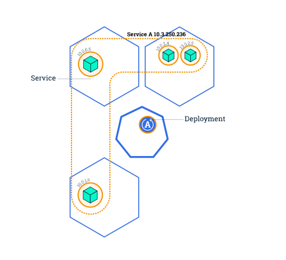
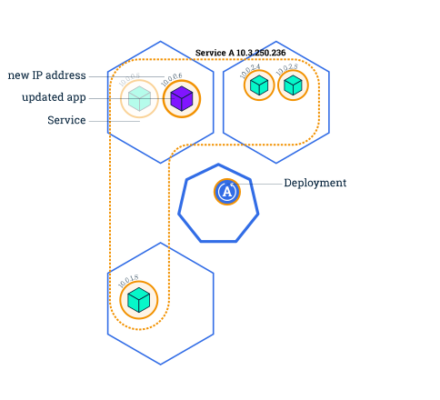
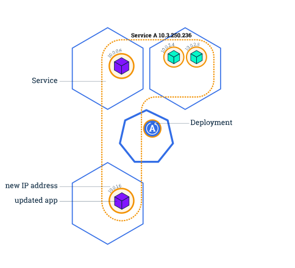
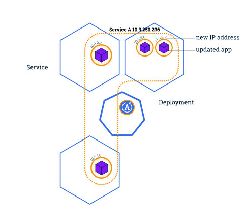

Objectives
Perform a rolling update using kubectl.
Before you begin
The shell commands in this tutorial use POSIX shell syntax, which is
supported by the default shells on most Linux and macOS systems (for
example, bash, zsh, or sh). Windows users must use a POSIX-compatible
shell such as Windows
Subsystem for Linux (WSL) or Git Bash to run the commands as
written. Commands that use export, $(), and
similar constructs are not compatible with PowerShell
or the Windows Command Prompt.
Updating an application
Note:
Rolling updates allow Deployments' update to take place with zero downtime by incrementally updating Pods instances with new ones.
Users expect applications to be available all the time, and developers are expected to deploy new versions of them several times a day. In Kubernetes this is done with rolling updates. A rolling update allows a Deployment update to take place with zero downtime. It does this by incrementally replacing the current Pods with new ones. The new Pods are scheduled on Nodes with available resources, and Kubernetes waits for those new Pods to start before removing the old Pods.
In the previous module we scaled our application to run multiple instances. This is a requirement for performing updates without affecting application availability. By default, the maximum number of Pods that can be unavailable during the update and the maximum number of new Pods that can be created, is one. Both options can be configured to either numbers or percentages (of Pods). In Kubernetes, updates are versioned and any Deployment update can be reverted to a previous (stable) version.
Rolling updates overview




Note:
If a Deployment is publicly exposed, the Service will send traffic
only to Pods that can handle requests.
This ensures users continue to access the application during an
update.
During a rolling update, this behavior keeps the application available by routing traffic only to Pods that are serving requests. Rolling updates allow the following actions:
- Promote an application from one environment to another (via container image updates)
- Rollback to previous versions
- Continuous Integration and Continuous Delivery of applications with zero downtime
In the following interactive tutorial, we'll update our application to a new version, and also perform a rollback.
Update the version of the app
To list your Deployments, run the get deployments
subcommand:
kubectl get deploymentsTo list the running Pods, run the get pods
subcommand:
kubectl get podsTo view the current image version of the app, run the
describe pods subcommand and look for the
Image field:
kubectl describe podsTo update the image of the application to version 2, use the
set image subcommand, followed by the deployment name and
the new image version:
kubectl set image deployments/kubernetes-bootcamp kubernetes-bootcamp=docker.io/jocatalin/kubernetes-bootcamp:v2The command notified the Deployment to use a different image for your
app and initiated a rolling update. Check the status of the new Pods,
and view the old one terminating with the get pods
subcommand:
kubectl get podsVerify an update
First, check that the service is running, as you might have deleted
it in previous tutorial step, run
describe services/kubernetes-bootcamp. If it's missing, you
can create it again with:
kubectl expose deployment/kubernetes-bootcamp --type="NodePort" --port 8080Create an environment variable called NODE_PORT that has
the value of the Node port assigned:
export NODE_PORT="$(kubectl get services/kubernetes-bootcamp -o go-template='{{(index .spec.ports 0).nodePort}}')"
echo "NODE_PORT=$NODE_PORT"Next, do a curl to the exposed IP and port:
curl http://"$(minikube ip):$NODE_PORT"Every time you run the curl command, you will hit a
different Pod. Notice that all Pods are now running the latest version
(v2).
You can also confirm the update by running the
rollout status subcommand:
kubectl rollout status deployments/kubernetes-bootcampTo view the current image version of the app, run the describe pods subcommand:
kubectl describe podsIn the Image field of the output, verify that you are
running the latest image version (v2).
Roll back an update
Let’s perform another update, and try to deploy an image tagged with
v10:
kubectl set image deployments/kubernetes-bootcamp kubernetes-bootcamp=gcr.io/google-samples/kubernetes-bootcamp:v10Use get deployments to see the status of the
deployment:
kubectl get deploymentsNotice that the output doesn't list the desired number of available
Pods. Run the get pods subcommand to list all Pods:
kubectl get podsNotice that some of the Pods have a status of
ImagePullBackOff.
To get more insight into the problem, run the
describe pods subcommand:
kubectl describe podsIn the Events section of the output for the affected
Pods, notice that the v10 image version did not exist in
the repository.
To roll back the deployment to your last working version, use the
rollout undo subcommand:
kubectl rollout undo deployments/kubernetes-bootcampThe rollout undo command reverts the deployment to the
previous known state (v2 of the image). Updates are
versioned and you can revert to any previously known state of a
Deployment.
Use the get pods subcommand to list the Pods again:
kubectl get podsTo check the image deployed on the running Pods, use the
describe pods subcommand:
kubectl describe podsThe Deployment is once again using a stable version of the app
(v2). The rollback was successful.
Remember to clean up your local cluster.
kubectl delete deployments/kubernetes-bootcamp services/kubernetes-bootcampWhat's next
- Learn more about Deployments.